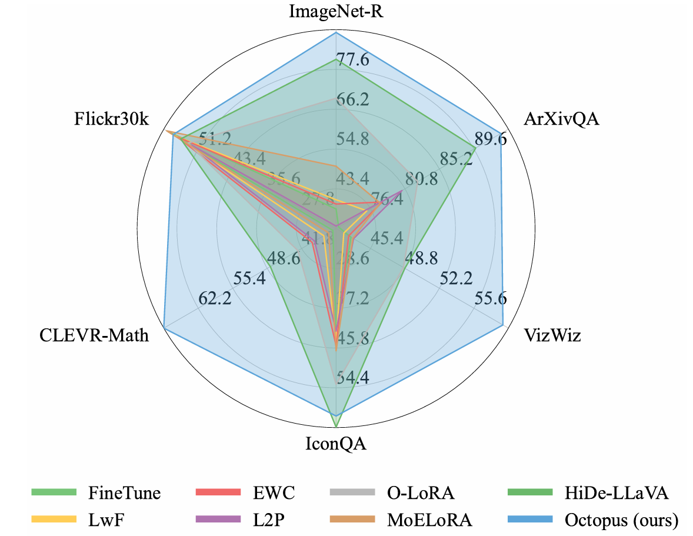
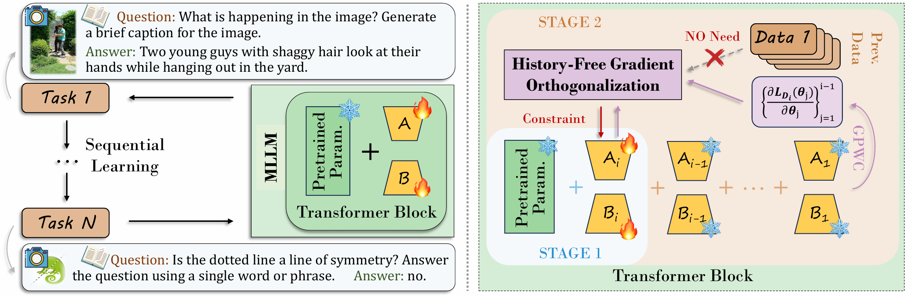

Octopus: History-Free Gradient Orthogonalization for Continual Learning in Multimodal Large Language Models
Abstract
Continual learning in multimodal large language models (MLLMs) aims to sequentially acquire knowledge while mitigating catastrophic forgetting, yet existing methods face inherent limitations: architecture-based approaches incur additional computational overhead and often generalize poorly to new tasks, rehearsal-based methods rely on storing historical data, raising privacy and storage concerns, and conventional regularization-based strategies alone are insufficient to fully prevent parameter interference. We propose Octopus, a two-stage continual learning framework based on History-Free Gradient Orthogonalization (HiFGO), which enforces gradient-level orthogonality without historical task data. Our proposed two-stage finetuning strategy decouples task adaptation from regularization, achieving a principled balance between plasticity and stability. Experiments on UCIT show that Octopus establishes state-of-the-art performance, surpassing prior SOTA by 2.14% and 6.82% in terms of Avg and Last.

Overall Architecture

Overall Architecture of Octopus.
Why GPWC works?
Text.
Two-Stage Finetuning
Text.
Experimental Results
Text.
Example Analysis
Text.

First image description.

Second image description.

Third image description.

Fourth image description.
Video Presentation
Another Carousel
Poster
BibTeX
@article{YourPaperKey2024,
title={Your Paper Title Here},
author={First Author and Second Author and Third Author},
journal={Conference/Journal Name},
year={2024},
url={https://your-domain.com/your-project-page}
}